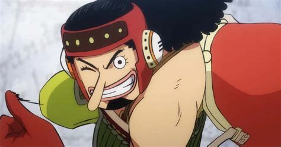

Alias: Hidung Panjang, God Usopp, Soge King. Jabatan: Penembak Jitu. Tebusan/Bounty: ฿500.000.000

Usopp adalah remaja berkulit cokelat langsing dengan rambut keriting hitam panjang sedang, bibir menonjol, dan hidung panjang. Usopp mewarisi hidungnya yang terkenal dari ibunya, sementara sisa wajahnya sangat mirip dengan ayahnya. Selama pemisahan Topi Jerami, setelah mendarat di Kepulauan Boin, Usopp menjadi gemuk karena makan berlebihan.
Seperti pria kru lainnya, dia mengenakan satu pakaian untuk sebagian besar seri sebelum mengenakan pakaian yang berbeda pada akhir Paradise. Usopp biasanya mengenakan bandana kotak-kotak hijau zaitun, ban lengan bergaris biru dan putih di lengan kirinya, bersama dengan kacamata sniper khusus (dia juga memiliki kacamata persegi panjang bening yang terkadang dia kenakan dalam situasi di mana dia tidak memiliki kacamata sniper-nya, seperti ketika dia pertama kali bertemu Bajak Laut Topi Jerami atau ketika kacamata sniper-nya dicuri oleh Mr. 2), overall coklat dengan selempang putih dan tidak ada kemeja di bawahnya. Dia juga membawa tas kuning, di mana dia menyimpan semua alat dan gadgetnya.
Selama Drum Island Arc, dia mengenakan jumper coklat dengan kerah dan manset bulu putih, sarung tangan kuning pudar, dan celana abu-abu dengan pola "c" hitam.
Selama berjalan melalui gurun di Arc Arabasta, dia mengenakan keffiyeh coklat di bawah kacamatanya berwarna merah kusam (biru di sampul Volume 19, dan hijau kusam di anime), dan jubah gurun bergaris hitam.
Selama Arc Skypiea, dia mengenakan kemeja hijau keruh di bawah overall coklat dan beberapa perban di tubuh dan lengannya setelah diserang oleh Enel.
Selama pertandingan terakhir Davy Back Fight, dia mengenakan jaket pelatih berritsleting kuning, handuk merah di bahunya, dan kacamata hitam perak dengan lensa ungu. Usopp juga dipercaya dengan topi jerami Luffy yang dia kenakan di kepalanya.
Selama Water 7 Arc, dia mengenakan perban di bawah terusannya lagi setelah diserang oleh Keluarga Franky.
saat berada di atas Puffing Tom, dia mengenakan topeng seperti matahari berwarna emas yang dia temukan di kompartemen di atas kacamatanya dan mengenakan jubah merah, menyebut persona superhero ini "Sogeking". Usopp mengenakan kostum ini untuk sisa Arc Lobi Enies.
Selama Thriller Bark Arc, Usopp mengenakan jubah ungu dan topi ungu bertepi lebar dengan kalung bawang putih untuk mengusir makhluk jahat.
Selama Arc Kepulauan Sabaody, Usopp mengenakan kemeja pirus yang tidak dikancingkan alih-alih terusannya dan beberapa celana pendek hijau dengan pola bunga kuning di satu kaki.
Setelah dua tahun timeskip, Usopp menjadi jauh lebih berotot dari sebelumnya dan telah menumbuhkan rambutnya. Dia menjadi "lebih jantan" dan sedikit lebih tinggi dari sebelumnya.
Usopp sekarang memiliki kacamata baru di lehernya (kacamata penembak jitunya tidak ditampilkan) dan memiliki beberapa headphone atau pelindung telinga. Dia juga sekarang memiliki janggut kecil bersama dengan topi matahari putih baru yang dia kenakan di kepalanya. Dia juga memiliki sepasang celana kuning gulung baru dengan suspender merah dan sepasang sepatu bot.
Tas kuning khasnya telah diganti dengan yang merah, tetapi dia masih memiliki gelang bergaris biru dan putih di lengan kirinya.
Selama Punk Hazard Arc, dia mengenakan mantel ungu dengan lapisan biru muda di samping, yang dia ambil dari salah satu Unit Patroli Centaur Brownbeard.
Selama Arc Dressrosa, dia mengenakan jaket terbuka oranye dengan cincin lingkaran di lengan dan topi merah yang memiliki rintisan runcing di ujungnya, yang dia gunakan untuk membuat para kurcaci percaya bahwa dia adalah keturunan Noland.
Di Wano Country Arc, Usopp mengenakan yukata biru muda di bawah sepasang hakama bergaris hitam dan putih, serta bandana hijau yang dihiasi dengan katak dan janggut lelaki tua palsu. Selama Raid on Onigashima, Usopp mengenakan celana kuning biasanya, gelang bergaris biru dan putih, tas, dan headphone, namun alih-alih suspender, Usopp memutuskan untuk mengenakan pelat baju besi warna-warni gelap dengan sarung tangan coklat dan tutup kepala pelindung merah. Ketika Kin'emon menggunakan kemampuan Buah Iblisnya lagi untuk menyamarkannya, dia mengenakan penyamaran Bajak Laut Beasts, menambahkan kacamatanya sebagai bagian dari penyamaran.
Selama Arc Egghead, Usopp mengenakan jumpsuit hijau limau, jaket hijau hutan dengan sarung tangan yang serasi, bandana ungu dengan pola roda gigi, dan lubang suara emas dengan antena di atasnya. Dia juga memakai kacamata hitam dengan lensa kuning-oranye, tas oranye dengan tali krem, dan sepasang Sepatu DOM emas.
Selama Arc Elbaph, Usopp saat ini menerima pakaian bergaya Viking karena Road memenjarakannya di Land of Gods-nya. Dia sekarang mengenakan helm viking kuning, terusan bengkak bergaris vertikal merah muda dan ungu dengan sabuk kulit hitam dan sepatu bot coklat bengkak, dengan tas dan headphone biasa, gelang logam, dan janggut dan kumis palsu.
Dalam Clockwork Island Adventure, dia awalnya muncul dengan pakaian renang bergaris merah dan putih. Setelah Bajak Laut Trump mencuri Going Merry dengan pakaiannya di dalamnya, dia harus mengenakan kimono cokelat dan topi hitam dari toko pernikahan. Kemudian dia mengganti pakaiannya dengan jaket oranye dan celana hijau tua, kembali mengenakan bandana yang biasa.
Di Kerajaan Chopper di Pulau Hewan Aneh, dia mengenakan terusan dengan cetakan kamuflase, selempang putihnya di pinggang. Dia juga memakai kacamata oranyenya selama plot. Juga sesaat, dia mengenakan kostum singa mewah yang dirancang sendiri.
Selama Arc G-8, dia menyusup sebagai prajurit Marinir, mengenakan seragam dan topi Marinir.